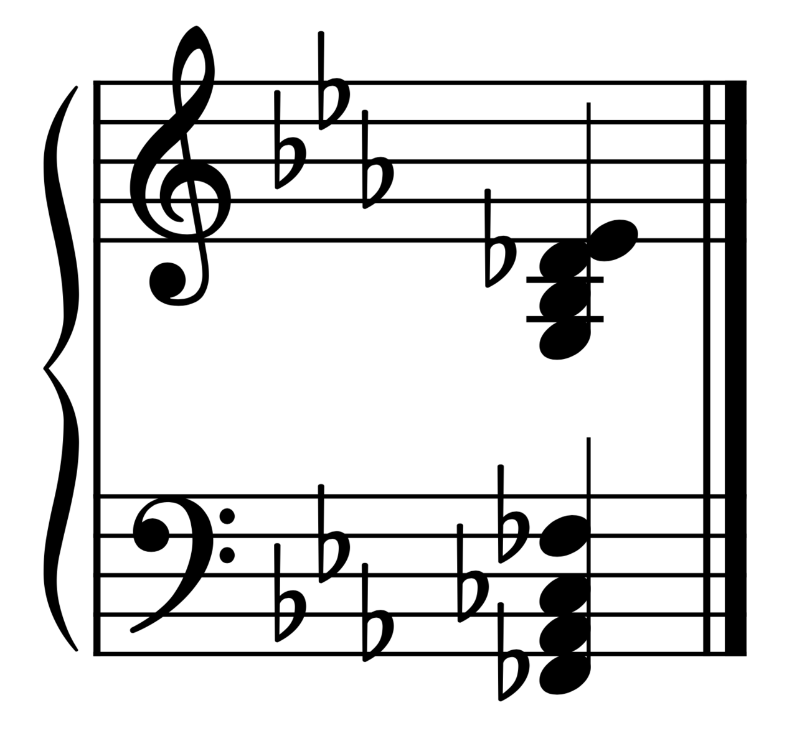

Музыка · 3-бөлім · Нота жазуы Music · Section 3 · Notation Музыка · Раздел 3 · Нотная запись
5 сызық, кілт — және әр нотаның өз орны болады. Five lines, a clef — and every note has its own place. 5 линий, ключ — и у каждой ноты появляется своё место.
Нота қатары — 5 параллель сызық. Олардың арасында 4 аралық бар. The staff is 5 parallel lines with 4 spaces between them. Нотный стан — это 5 параллельных линий. Между ними — 4 промежутка (поля).
Сызықтар төменнен жоғары қарай саналады: ең төменгісі — 1-сызық. Lines are counted from bottom to top: the lowest is line 1. Линии считают снизу вверх: самая нижняя — первая линия.
Жоғары не төмен ноталар үшін қосымша сызықтар қосылады. For higher or lower notes we add ledger lines. Для более высоких или низких нот добавляют добавочные линии.
Скрипка кілті 2-сызықты орап өтеді — сонда сол сызықта соль¹ (бірінші октаваның сольі) орналасады. Қалған ноталар содан есептеледі. The treble clef curls around line 2 — so that line becomes G4 (соль¹). All other notes are counted from it. Скрипичный ключ завивается вокруг второй линии — поэтому на ней находится соль¹ (соль первой октавы). От неё отсчитывают остальные ноты.
🎧 ноталарды басып, дыбысын тыңдаңыз click the notes to hear them нажимайте на ноты, чтобы услышать их
🎵 Сызықтардағы ноталар (төменнен) Notes on the lines (bottom-up) Ноты на линиях (снизу вверх)
Ми · Соль · Си · Ре · Фа
E · G · B · D · F
🎵 Аралықтардағы ноталар (төменнен) Notes in the spaces (bottom-up) Ноты в промежутках (снизу вверх)
Фа · Ля · До · Ми
F · A · C · E

Бірінші октаваның до нотасы қатарға сыймайды — ол қатардың астындағы бірінші қосымша сызықта жазылады. The note middle C (до¹) does not fit on the staff — it sits on the first ledger line below it. Нота до первой октавы не помещается на стане — её пишут на первой добавочной линии под станом.